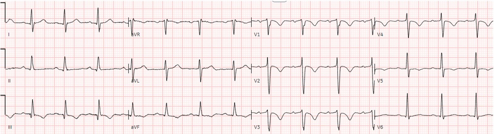
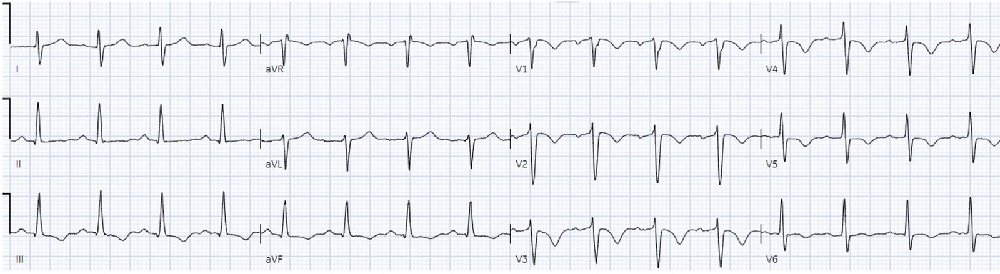
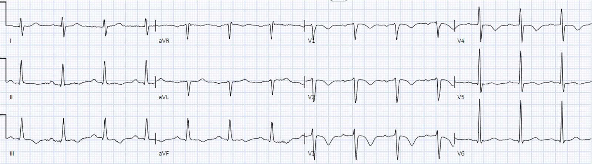
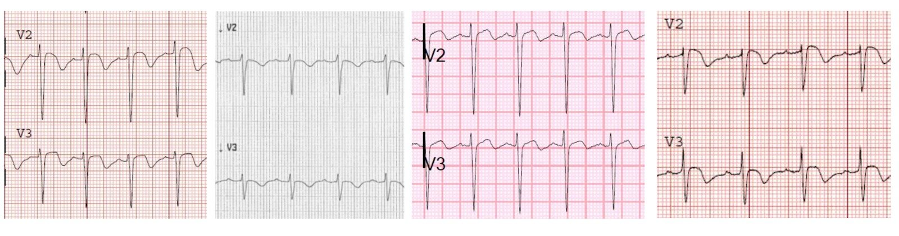
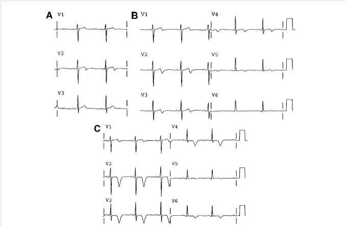
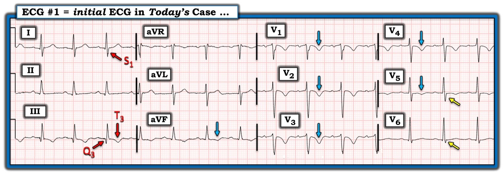
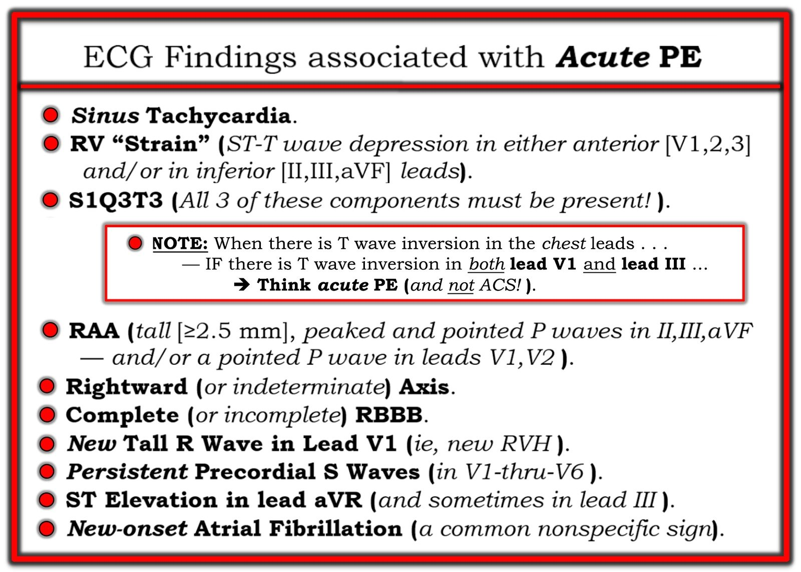

17/06/2024 — Thêm một điện tâm đồ lúc phân loại (triage) chết người bị bỏ sót, và bệnh nhân đang chờ đã bỏ về trước khi được khám. Điện tâm đồ gần như đặc hiệu chẩn đoán (pathognomonic) này là gì?
Bản dịch tiếng Việt của bài "Another deadly triage ECG missed, and the waiting patient leaves before being seen. What is this nearly pathognomonic ECG?" – Dr. Smith’s ECG Blog. Giữ nguyên toàn bộ 8 hình ảnh của bản gốc.
Viết bởi Bobby Nicholson, MD
Nam 67 tuổi, tiền sử tăng huyết áp và tăng lipid máu, được xe cấp cứu đưa đến khoa cấp cứu (ED) vì đau ngực giữa xương ức không lan và khó thở khi gắng sức. Cơn đau giảm còn 1/10 sau khi đội cấp cứu ngoài viện (EMS) cho uống 324 mg aspirin, và điện tâm đồ sau đây được ghi lúc phân loại (triage).


Nếu điện tâm đồ này được đưa cho bạn sàng lọc từ khu phân loại mà không kèm bất kỳ thông tin lâm sàng nào, bạn sẽ nghĩ gì? (với những ai không làm Cấp cứu: điện tâm đồ được đưa cho chúng tôi mà không có bất kỳ bối cảnh lâm sàng nào)
Điện tâm đồ được đọc đơn giản là “Không phải STEMI.” Không may, thời gian chờ rất lâu và bệnh nhân đã bỏ về trước khi được nhân viên y tế khám. Tuy nhiên, điện tâm đồ của ông được đọc lại (overread) là “bất thường” vào ngày hôm sau và ông được yêu cầu quay lại khoa cấp cứu để đánh giá.
Khi đến khoa cấp cứu vào ngày hôm sau, bệnh nhân cho biết đau ngực khoảng 10 ngày, kèm khó thở và vã mồ hôi. Ông cũng kể một cơn ngất xảy ra hồi sáng sớm cùng ngày.
Dấu hiệu sinh tồn lúc đến: HR 95, HA 131/83, nhịp thở 14, SpO2 98%, nhiệt độ 36,7 °C
Thăm khám đáng chú ý: vã mồ hôi, phù hai chi dưới 1+, nhịp tim đều, không có dấu hiệu suy hô hấp, rì rào phế nang bình thường.
Điện tâm đồ ghi lúc đến khoa cấp cứu:


Chẩn đoán phân biệt của bạn có thay đổi so với lần đến đầu tiên không?
Xét nghiệm đáng chú ý: troponin I tăng 0,10 ng/mL, BNP 2790, lactate 3,7. Troponin I lặp lại khoảng 5 giờ sau kết quả đầu tiên là 0,14 ng/mL.
Trong lúc chờ ở khoa cấp cứu, bệnh nhân cố đi bộ vào nhà vệ sinh và cơn tức ngực tái phát, kèm khó thở và vã mồ hôi sau khi đi được khoảng 10-15 feet.


Bạn có nhận ra thay đổi động (dynamic) nào so với điện tâm đồ trước đó của bệnh nhân không?
Do đau ngực khi gắng sức và troponin tăng, bệnh nhân được nhập viện với chẩn đoán “NSTEMI”, dự kiến thông tim trái vào ngày hôm sau. Bệnh nhân được truyền heparin liên tục và được chỉ định chụp CT mạch ngực (CTA) để loại trừ thuyên tắc phổi.
Khi nhập viện, CTA ngực cho thấy thuyên tắc phổi với gánh nặng huyết khối lớn, lan từ động mạch phổi chính đến các động mạch thùy, phân thùy và dưới phân thùy, ảnh hưởng cả 5 thùy phổi, kèm trào ngược thuốc cản quang xuống dưới gan và bằng chứng tăng gánh tim.
Siêu âm tim cho thấy thất phải giãn nặng với dấu hiệu McConnell và RVSP (áp lực tâm thu thất phải) tăng. Bệnh nhân được chuyển lên ICU để theo dõi sát hơn.
Đây là một ca giống nhiều ca khác đã đăng (xem danh sách bên dưới), và điện tâm đồ từ lần đến đầu tiên của bệnh nhân có thể nhanh chóng được nhận ra là có giá trị chẩn đoán thuyên tắc phổi. Thực tế, Kosuge và cs. đã chỉ ra rằng ở những bệnh nhân bị hội chứng vành cấp hoặc thuyên tắc phổi cấp có sóng T âm ở các chuyển đạo trước tim (V1-V4), sóng T đảo ngược ở chuyển đạo III và V1 chỉ có ở 1% bệnh nhân hội chứng vành cấp nhưng có ở 88% bệnh nhân thuyên tắc phổi. “Độ nhạy, độ đặc hiệu, giá trị tiên đoán dương và giá trị tiên đoán âm của dấu hiệu này trong chẩn đoán APE (thuyên tắc phổi cấp) lần lượt là 88%, 99%, 97% và 95%.”
1. Electrocardiographic Differentiation Between Acute Pulmonary Embolism and Acute Coronary Syndromes on the Basis of Negative T Waves – ScienceDirect. Truy cập ngày 28 tháng Năm năm 2024. https://www.sciencedirect.com/science/article/pii/S0002914906023745
Bình luận của Smith:
Điện tâm đồ ở trên cùng được nhắn tin cho tôi và, không có thông tin lâm sàng, tôi nói “Trông giống PE.” Nó gần như đặc hiệu chẩn đoán (pathognomonic) cho PE. Tại sao? Có sóng T đảo ngược ở V1-V4 VÀ sóng T đảo ngược ở chuyển đạo III (xem ở trên). Hơn nữa, hình thái sóng T đảo ngược ở V1-V3 là điển hình của PE. Một đặc điểm của hình thái đó là như sau, ở V1-V3: sóng R nhỏ và sóng S tương đối sâu.
Xem bài rất bổ ích này:
A crashing patient with an abnormal ECG that you must recognize (Bệnh nhân suy sụp nhanh với một điện tâm đồ bất thường mà bạn phải nhận ra)
Thêm các điện tâm đồ PE có hình thái điển hình đó từ bài nêu trên:


Đối chiếu với các sóng T đảo ngược Wellens bên dưới [cả Kiểu A, sóng T hai pha với phần cuối đảo ngược ở Ô A và B, và Kiểu B, đảo ngược sâu đối xứng ở Ô C). Sóng R được bảo tồn tốt trong sóng Wellens.


Pendell: Xem các ca tăng gánh tim phải cấp / thuyên tắc phổi khác của chúng tôi:
A man in his 50s with shortness of breath (Nam giới ngoài 50 tuổi bị khó thở)
A man in his 40s with RUQ abdominal pain (Nam giới ngoài 40 tuổi đau bụng hạ sườn phải)
A woman in her 50s with shortness of breath (Nữ giới ngoài 50 tuổi bị khó thở)
When the ECG is more revealing than the HPI (Khi điện tâm đồ cho biết nhiều hơn bệnh sử)
A crashing patient with an abnormal ECG that you must recognize (Bệnh nhân suy sụp nhanh với một điện tâm đồ bất thường mà bạn phải nhận ra)
A man in his 40s with a highly specific ECG (Nam giới ngoài 40 tuổi với một điện tâm đồ có độ đặc hiệu cao)
Chest pain, ST Elevation, and tachycardia in a 40-something woman (Đau ngực, ST chênh lên và nhịp nhanh ở một phụ nữ ngoài 40 tuổi)
Repost: Syncope, Shock, AV block, RBBB, Large RV, “Anterior” ST Elevation in V1-V3 (Đăng lại: Ngất, sốc, blốc AV, RBBB, thất phải lớn, ST chênh lên “thành trước” ở V1-V3)
A young woman with altered mental status and hypotension (Phụ nữ trẻ rối loạn ý thức và tụt huyết áp)
An elderly woman transferred to you for chest pain, shortness of breath, and positive troponin – does she need the cath lab now? (Phụ nữ cao tuổi được chuyển đến bạn vì đau ngực, khó thở và troponin dương tính – bà có cần vào phòng thông tim ngay không?)
A 30-something woman with chest pain and h/o pulmonary hypertension due to chronic pulmonary emboli (Phụ nữ ngoài 30 tuổi đau ngực, tiền sử tăng áp phổi do thuyên tắc phổi mạn tính)
A 30-something with 8 hours of chest pain and an elevated troponin (Một người ngoài 30 tuổi đau ngực 8 giờ và troponin tăng)
Syncope, Shock, AV block, Large RV, “Anterior” ST Elevation…. (Ngất, sốc, blốc AV, thất phải lớn, ST chênh lên “thành trước”….)
Dyspnea, Chest pain, Tachypneic, Ill appearing: Bedside Cardiac Echo gives the Diagnosis (Khó thở, đau ngực, thở nhanh, vẻ mặt bệnh nặng: siêu âm tim tại giường cho chẩn đoán)
31 Year Old Male with RUQ Pain and a History of Pericarditis. Submitted by a Med Student, with Great Commentary on Bias! (Nam 31 tuổi đau hạ sườn phải và tiền sử viêm màng ngoài tim. Do một sinh viên y khoa gửi, kèm bình luận tuyệt vời về thiên kiến!)
Chest pain, SOB, Precordial T-wave inversions, and positive troponin. What is the Diagnosis? (Đau ngực, khó thở, sóng T đảo ngược ở chuyển đạo trước tim và troponin dương tính. Chẩn đoán là gì?)
Cardiac Ultrasound may be a surprisingly easy way to help make the diagnosis (Siêu âm tim có thể là cách dễ dàng đến bất ngờ giúp chẩn đoán)
Answer: pulmonary embolism. Now another, with ultrasound…. (Đáp án: thuyên tắc phổi. Giờ thêm một ca nữa, kèm siêu âm….)
This is a quiz. The ECG is nearly pathognomonic. Answer at bottom. (Đây là một câu đố. Điện tâm đồ gần như đặc hiệu chẩn đoán. Đáp án ở cuối bài.)
Chest Pain, SOB, anterior T-wave inversion, positive troponin (Đau ngực, khó thở, sóng T đảo ngược thành trước, troponin dương tính)
Anterior T wave inversion due to Pulmonary Embolism (Sóng T đảo ngược thành trước do thuyên tắc phổi)
Collapse, pulse present, ECG shows inferior OMI. Then there is loss of pulses with continued narrow complex on the monitor (“PEA arrest”) (Trụy, còn mạch, điện tâm đồ cho thấy OMI thành dưới. Sau đó mất mạch trong khi monitor vẫn hiện phức bộ hẹp (“ngừng tim PEA”))
What do you suspect from this ECG in this 40-something with SOB and Chest pain? (Bạn nghi ngờ gì từ điện tâm đồ này ở một người ngoài 40 tuổi bị khó thở và đau ngực?)
Trích lại từ một bài trước:
Kiến thức cơ bản về điện tâm đồ trong thuyên tắc phổi:
Đây là các dấu hiệu tăng gánh tim phải cấp, và có thể gặp trong bất kỳ tình trạng nào gây tăng nhanh áp lực động mạch phổi. Điều này bao gồm cả thiếu oxy, do “co mạch phổi do thiếu oxy”
Điện tâm đồ không nhạy với PE, nhưng khi có các dấu hiệu như S1Q3T3, sóng T đảo ngược thành trước, hoặc RBBB mới, thì chúng có tỷ số khả dĩ (+), và S1Q3T3, hoặc thậm chí chỉ riêng T3, có thể giúp phân biệt Wellens với PE.
Stein và cs. chỉ thấy điện tâm đồ bình thường ở 3 trong 50 bệnh nhân PE diện rộng, và 9 trong 40 bệnh nhân PE dưới diện rộng (submassive). Tuy nhiên, ngày nay con số đó sẽ cao hơn vì chúng ta chẩn đoán được nhiều PE dưới diện rộng có triệu chứng tối thiểu hơn.
Đây là một bài báo đáng đọc: Marchik và cs. đã nghiên cứu các dấu hiệu điện tâm đồ của PE ở 6.049 bệnh nhân, trong đó 354 người bị PE. Họ thấy S1Q3T3 có tỷ số khả dĩ dương là 3,7; sóng T đảo ngược ở V1 và V2: 1,8; sóng T đảo ngược ở V1-V3: 2,6; sóng T đảo ngược ở V1-V4: 3,7; blốc nhánh phải không hoàn toàn (IRBBB): 1,7 và nhịp nhanh: 1,8. Cuối cùng, họ thấy S1Q3T3, sóng T đảo ngược ở chuyển đạo trước tim V1-V4 và nhịp nhanh là các yếu tố tiên đoán độc lập của PE.
S1Q3T3 là gì? Rất ít nghiên cứu định nghĩa S1Q3T3. Nó đã được mô tả từ tận năm 1935 và cả S1 lẫn Q3 đều được định nghĩa là 1,5 mm (0,15 mV). Trong bài của Marchik (giả định họ định nghĩa giống như vậy, và phần phương pháp không nêu rõ điều này), S1Q3T3 được thấy ở 8,5% bệnh nhân có PE và 3,3% bệnh nhân không có PE.
Kosuge và cs. đã chỉ ra rằng, khi sóng T đảo ngược ở các chuyển đạo trước tim, nếu chúng cũng đảo ngược ở chuyển đạo III và V1, thì thuyên tắc phổi có khả năng cao hơn nhiều so với ACS. Trong nghiên cứu này, (trích dẫn) “sóng T âm ở chuyển đạo III và V1 chỉ gặp ở 1% bệnh nhân ACS so với 88% bệnh nhân PE cấp (p nhỏ hơn 0,001). Độ nhạy, độ đặc hiệu, giá trị tiên đoán dương và giá trị tiên đoán âm của dấu hiệu này trong chẩn đoán PE lần lượt là 88%, 99%, 97% và 95%. Tóm lại, sự hiện diện của sóng T âm ở cả chuyển đạo III và V1 cho phép phân biệt PE với ACS một cách đơn giản mà chính xác ở những bệnh nhân có sóng T âm ở các chuyển đạo trước tim.”
Witting và cs. đã khảo sát các bệnh nhân liên tiếp bị PE, ACS hoặc không bị cả hai. Họ thấy chỉ 11% trường hợp PE có sóng T đảo ngược 1 mm ở cả chuyển đạo III lẫn chuyển đạo V1, so với 4,6% ở nhóm chứng. Điều này không mâu thuẫn với kết luận của Kosuge và cs. rằng khi sóng T đảo ngược ở các chuyển đạo trước tim phải và ở chuyển đạo III thực sự có mặt, thì PE có thể thực sự phổ biến hơn. Theo kinh nghiệm của tôi, điều này đúng, nhưng cần được xác nhận bằng một nghiên cứu có phương pháp tương tự. Ủng hộ Kosuge, Ferrari nhận thấy sóng T đảo ngược ở các chuyển đạo trước là dấu hiệu điện tâm đồ thường gặp nhất trong PE diện rộng.

===================================
BÌNH LUẬN CỦA TÔI, bởi KEN GRAUER, MD (17/6/2024):
===================================
Ca hôm nay của BS. Nicholson và BS. Meyers là một lời nhắc quan trọng về một bệnh lý có thể đe dọa tính mạng mà vẫn bị bỏ sót — đó là PE cấp (thuyên tắc phổi — Pulmonary Embolism).
- Chúng ta đã tiến một chặng dài kể từ thời tôi còn là bác sĩ nội trú — khi đó giảm oxy máu trên ABG (khí máu động mạch — Arterial Blood Gases) là xét nghiệm MẤU CHỐT giúp gợi ý ban đầu PE cấp (dù tình trạng tăng thông khí do đau mà chính thủ thuật tại giường này gây ra thường làm sai lệch kết quả).
- Năm 2024 — một khi đã nghĩ đến chẩn đoán PE cấp, siêu âm tim tại giường và/hoặc CTPA (chụp CT mạch phổi — Computed Tomography Pulmonary Angiography) cho phép xác nhận nhanh chóng.
- Dù vậy — như ca hôm nay một lần nữa cho thấy, chẩn đoán này phải được nghĩ đến. Và, như ca hôm nay cũng một lần nữa cho thấy — nhận ra các dấu hiệu điện tâm đồ của PE cấp thường mang lại manh mối MẤU CHỐT cho PE cấp diện rộng (và thường cả dưới diện rộng) — NẾU chúng ta chịu lắng nghe …
Một LƯU Ý lâm sàng thường bị quên:
Đánh giá ban đầu một bệnh nhân có thể bị PE cấp bắt đầu bằng việc đếm tần số thở. Trong nhiều thập kỷ làm việc với các bác sĩ nội trú khi còn là bác sĩ điều trị chính tại bệnh viện — cho đến nay, dấu hiệu sinh tồn bị bỏ qua nhiều nhất chính là tần số thở.
- Điểm MẤU CHỐT: Tần số thở được ghi trên hồ sơ không được tính! Tôi không thể kể hết bao nhiêu lần con số “ghi chép” như vậy bị sai, do xu hướng ghi một con số bình thường thay vì đếm trong 30 giây vì “bệnh nhân trông như đang thở bình thường”.
- Bệnh nhân có thể “trông” như đang thở bình thường — trong khi thực ra họ đang thở nhanh, nếu bạn chỉ cần dành thời gian quan sát và đếm. Chỉ cần vài giây tập trung là bạn xác định được bệnh nhân thở nhanh đến mức nào. Và NẾU tần số thở của bệnh nhân tăng và điện tâm đồ ban đầu của họ trông giống điện tâm đồ ban đầu trong ca hôm nay — Bạn đã chẩn đoán PE cấp cho đến khi chứng minh được điều ngược lại!
- RR (tần số thở — Respiratory Rate) trong ca hôm nay được ghi là 14/phút lúc bệnh nhân đến khoa cấp cứu vào ngày sau lần đến khám đầu tiên. Tôi cho rằng con số RR được ghi này có thể đúng hoặc không. Cách duy nhất để biết chắc là chính BẠN đếm.
- Không có RR nào được ghi nhận vào ngày thứ 1 khi bệnh nhân được phân loại. Với hình ảnh của điện tâm đồ ban đầu trong ca hôm nay (được ghi ở lần phân loại đầu tiên đó) — đây là một cơ hội bị bỏ lỡ …
Điện tâm đồ ban đầu của ca hôm nay:
Như BS. Nicholson và BS. Meyers đã nêu — Với bệnh sử của người đàn ông 67 tuổi này, đau ngực và khó thở trong những ngày trước khi đến khoa cấp cứu — điện tâm đồ ban đầu (mà tôi đã tái hiện và đánh dấu trong Hình 1) của bệnh nhân này — có giá trị chẩn đoán PE cấp cho đến khi chứng minh được điều ngược lại.
- BS. Nicholson và BS. Meyers cung cấp nhiều link ở cuối phần bàn luận tới các ca PE cấp liên quan rất bổ ích mà chúng tôi đã trình bày trên Dr. Smith’s ECG Blog. Tôi xin dẫn chiếu tới Bình luận của tôi trong bài ngày 4 tháng Ba năm 2023 — trong đó tôi có đưa một Bảng về Các dấu hiệu điện tâm đồ của PE cấp. Tôi đã sửa Bảng này thành bảng tôi trình bày dưới đây trong Hình 2 — kèm một ghi chú nhấn mạnh điểm lâm sàng then chốt được nêu bật trong Tổng quan nhập môn về điện tâm đồ trong PE của các tác giả.
- Theo Tổng quan nhập môn của họ — Khi sóng T đảo ngược ở các chuyển đạo trước tim — NẾU sóng T cũng đảo ngược ở chuyển đạo III và V1 — thì khả năng PE cấp là cao hơn nhiều so với ACS.


Điện tâm đồ ban đầu của ca hôm nay cho thấy:
- Nhịp xoang tần số ~85/phút.
- Các khoảng và trục bình thường — dù sóng S ở chuyển đạo I sâu hơn mức thường thấy ở chuyển đạo bên trái này. Tôi nghĩ đây là dấu hiệu báo trước tinh tế của trục lệch phải ngày càng tăng diễn tiến qua 2 bản ghi tiếp theo trong ca hôm nay.
- Không lớn buồng tim.
- Vùng chuyển tiếp hơi muộn — sóng R trở nên cao hơn độ sâu sóng S ở khoảng giữa chuyển đạo V4 và V5 (sóng R cao hơn rồi lại thấp hơn ở chuyển đạo V2 so với V3 có lẽ là hậu quả của việc đặt điện cực ngực hơi sai vị trí).
- Một dấu hiệu tinh tế khác của PE là sóng S trước tim tồn tại kéo dài tới tận chuyển đạo V6 (mũi tên VÀNG trong Hình 1 — thông thường không có sóng S ở xa tới mức này trong các chuyển đạo ngực bên).
- Các dấu hiệu điện tâm đồ MẤU CHỐT trong Hình 1 gợi ý PE cấp cho đến khi chứng minh được điều ngược lại là: i) S1Q3T3; — ii) Sóng T đảo ngược sâu, đối xứng ở các chuyển đạo V1 đến V4 (mũi tên XANH DƯƠNG ở các chuyển đạo này = “tăng gánh” thất phải); — iii) Khi có sóng T đảo ngược ở chuyển đạo ngực — có sóng T đảo ngược rõ ở cả chuyển đạo V1 lẫn chuyển đạo III; — và, iv) Không chỉ thấy “tăng gánh” thất phải ở các chuyển đạo ngực — mà sóng T đảo ngược ở các chuyển đạo III và aVF gợi ý “tăng gánh” thất phải cả ở các chuyển đạo chi.
- Xin nhấn mạnh: Chúng ta không thấy tất cả các dấu hiệu điện tâm đồ của PE cấp trong ca hôm nay. Phần lớn thời gian — chúng ta sẽ không thấy tất cả các chỉ điểm điện tâm đồ mà tôi liệt kê trong Hình 2 (và tôi đã bàn trong Bình luận của tôi ở bài ngày 4 tháng Ba năm 2023). Dù vậy — kiểu sóng T đảo ngược ở điện tâm đồ #1, vốn có giá trị chẩn đoán tuyệt đối “tăng gánh” thất phải cấp, kết hợp với bệnh sử lâm sàng — giúp xác lập chẩn đoán trong ca hôm nay cho đến khi chứng minh được điều ngược lại.

